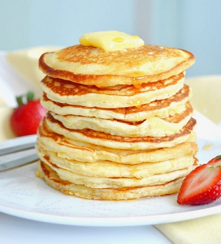

Pan Cakes

This recipe doesn't require much thought early in the morning, and tastes great!"
- No. of servings : 4
- Cooking Time:15 min
List of ingredients:
- 1 egg, beaten
- 1 cup all-purpose flour
- 2 tablespoons white sugar
- 1 cup milk
- 2 teaspoons baking powder
- 2 tablespoons vegetable oil
- 1 teaspoon salt
Instruction
-
In a large bowl, mix flour, sugar, baking powder and salt.
Make a well in the center, and pour in milk, egg and oil. Mix until smooth.
-
Heat a lightly oiled griddle or frying pan over medium high heat.
Pour or scoop the batter onto the griddle, using approximately 1/4
cup for each pancake. Brown on both sides and serve hot.
Nutrition Facts
- 247 calories
- 9.6 g fat
- 33.5 g carbohydrates
- 6.8 g protein
- 51 mg cholesterol
- 804 mg sodium